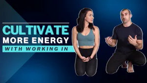

B778 · Simple Movement to Build Energy
Hello {first_name},
How would your body feel and look if you could store up more energy? What if you could super-charge your recovery?
Give today’s video a watch and spend 5 minutes practicing. Once you’ve given it a try, you’ll have a new movement for your toolbox to keep yourself:
Training and growing your athletic ability isn’t all busting skulls and growling. Give your body the energy it needs to recover, so you are ready to use the strength you’ve developed with grace.
Today’s video is under 5 minutes. Watch it now.
 Train intentionally, Mike Salemi |